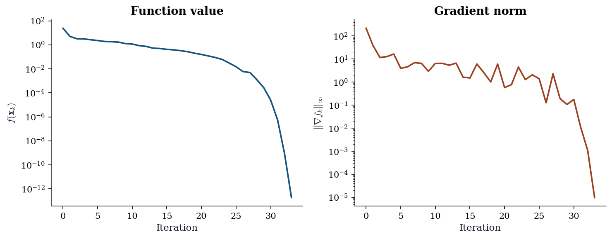
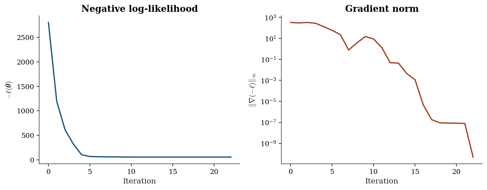

import numpy as np
import matplotlib.pyplot as plt
from scipy.optimize import (
minimize, rosen, rosen_der, rosen_hess, rosen_hess_prod,
)
from scipy.optimize import line_search
plt.style.use('assets/book.mplstyle')2 Smooth Optimization: Line Search, Quasi-Newton, and Trust Regions
2.1 Notation for this chapter
| Symbol | Meaning | scipy parameter |
|---|---|---|
| \(f(\mathbf{x})\) | Objective function | fun |
| \(\nabla f(\mathbf{x})\), \(\mathbf{g}_k\) | Gradient at \(\mathbf{x}_k\) | jac |
| \(\nabla^2 f(\mathbf{x}_k)\) | Hessian at \(\mathbf{x}_k\) | hess |
| \(\mathbf{B}_k\) | Quasi-Newton Hessian approximation | (internal) |
| \(\mathbf{H}_k\) | Inverse Hessian approximation \(\mathbf{B}_k^{-1}\) (BFGS) | (internal) |
| \(\mathbf{x}_0\) | Starting point | x0 |
| \(\mathbf{x}^*\) | Minimizer | result.x |
| \(\mathbf{p}_k\) | Search direction at iteration \(k\) | |
| \(\alpha_k\) | Step size at iteration \(k\) | |
| \(\Delta_k\) | Trust-region radius at iteration \(k\) | |
| \(\mathbf{s}_k\) | Step: \(\mathbf{x}_{k+1} - \mathbf{x}_k\) | |
| \(\mathbf{y}_k\) | Gradient change: \(\nabla f_{k+1} - \nabla f_k\) | |
| \(\gamma_k\) | \(1/(\mathbf{y}_k^\top \mathbf{s}_k)\) — BFGS update scalar | |
| \(\rho_k\) | Trust-region actual/predicted reduction ratio | |
| \(m_k(\mathbf{p})\) | Quadratic model at iteration \(k\) | |
| \(\tau_k\) | Cauchy point scaling factor | |
| \(L\) | Lipschitz constant of \(\nabla f\) | |
| \(\kappa\) | Condition number of \(\nabla^2 f(\mathbf{x}^*)\) | |
| \(c_1, c_2\) | Wolfe condition parameters | (scipy: c1, c2) |
3 Motivation
In Chapter 1, we traced LogisticRegression.fit(solver='lbfgs') to a call to scipy.optimize.minimize(method='L-BFGS-B'). The coefficients came back. The question this chapter answers is: why did they come back, and when might they not?
The setting is as old as calculus: given a smooth function \(f: \mathbb{R}^p \to \mathbb{R}\), find a point \(\mathbf{x}^*\) where \(f\) is minimized. Every regression model, every maximum likelihood estimator, every penalized objective in this book reduces to this problem. The methods differ in how they use derivative information to navigate the landscape.
Two paradigms organize the field:
Line search. Choose a descent direction \(\mathbf{p}_k\), then decide how far to step along it. The direction encodes curvature information (via the Hessian or an approximation); the step size ensures sufficient decrease.
Trust region. Build a local quadratic model of \(f\), decide how far you trust it (a radius \(\Delta_k\)), then minimize the model within that radius. The model encodes curvature; the radius controls how aggressively you follow it.
Both paradigms are implemented in scipy.optimize.minimize. The line search paradigm gives us BFGS and L-BFGS-B. The trust region paradigm gives us trust-ncg and trust-krylov. Newton-CG is a hybrid: Newton direction with a CG inner solver and a line search.
This chapter develops the theory for both paradigms, implements BFGS from scratch, and shows when each method is the right choice. The proofs are not exercises in mathematical maturity—they are the tools you need when the optimizer fails and you have to diagnose why.
4 Mathematical Foundation
4.1 Assumptions
We work under two standing assumptions throughout the chapter.
Assumption 2.1 (Smoothness)
\(f: \mathbb{R}^p \to \mathbb{R}\) is twice continuously differentiable (\(f \in C^2\)), and \(\nabla f\) is Lipschitz continuous with constant \(L > 0\): \[ \|\nabla f(\mathbf{x}) - \nabla f(\mathbf{y})\| \leq L \|\mathbf{x} - \mathbf{y}\| \quad \text{for all } \mathbf{x}, \mathbf{y} \in \mathbb{R}^p. \]
Assumption 2.2 (Bounded below)
\(f\) is bounded below: \(\inf_{\mathbf{x}} f(\mathbf{x}) > -\infty\).
These two assumptions are satisfied by every well-posed statistical estimation problem in this book. Assumption 2.1 excludes \(\ell_1\) penalties and other nonsmooth objectives (deferred to Chapter 4). Assumption 2.2 excludes pathological objectives that decrease without bound; in statistical applications, the negative log-likelihood is bounded below by zero.
A point \(\mathbf{x}^*\) is a stationary point if \(\nabla f(\mathbf{x}^*) = \mathbf{0}\). It is a local minimizer if, additionally, \(\nabla^2 f(\mathbf{x}^*)\) is positive semidefinite. It is a strict local minimizer if \(\nabla^2 f(\mathbf{x}^*)\) is positive definite. Under Assumption 2.1, every method in this chapter converges to a stationary point; whether that stationary point is a local minimizer depends on the problem.
4.2 Line search: the Wolfe conditions
The simplest line search is backtracking: try \(\alpha = 1\), and if the function value did not decrease enough, shrink \(\alpha\) by a factor and try again. “Enough” is formalized by the Armijo condition (sufficient decrease):
Definition 2.1 (Armijo condition)
A step size \(\alpha_k > 0\) satisfies the Armijo condition along direction \(\mathbf{p}_k\) if \[ f(\mathbf{x}_k + \alpha_k \mathbf{p}_k) \leq f(\mathbf{x}_k) + c_1 \alpha_k \nabla f(\mathbf{x}_k)^\top \mathbf{p}_k, \tag{4.1}\] where \(c_1 \in (0, 1)\) is a small constant (typically \(c_1 = 10^{-4}\)).
The Armijo condition alone is not enough for convergence of quasi-Newton methods: it permits step sizes that are too short, causing the BFGS update to degenerate. The curvature condition prevents this:
Definition 2.2 (Curvature condition)
A step size \(\alpha_k > 0\) satisfies the curvature condition if \[ \nabla f(\mathbf{x}_k + \alpha_k \mathbf{p}_k)^\top \mathbf{p}_k \geq c_2 \nabla f(\mathbf{x}_k)^\top \mathbf{p}_k, \tag{4.2}\] where \(c_2 \in (c_1, 1)\) (typically \(c_2 = 0.9\) for quasi-Newton methods, \(c_2 = 0.1\) for conjugate gradient).
Together, Equation eq-armijo and Equation eq-curvature are the Wolfe conditions. The curvature condition ensures that the step is not too short: at the accepted point, the directional derivative has decreased by a factor of at least \(c_2\). For BFGS specifically, the Wolfe conditions guarantee that \(\mathbf{s}_k^\top \mathbf{y}_k > 0\), which keeps the Hessian approximation positive definite (Theorem 2.5).
Scipy’s BFGS implementation uses the strong Wolfe conditions, which replace Equation eq-curvature with \(|\nabla f(\mathbf{x}_k + \alpha_k \mathbf{p}_k)^\top \mathbf{p}_k| \leq c_2 |\nabla f(\mathbf{x}_k)^\top \mathbf{p}_k|\), ruling out points where the directional derivative is large and negative. The strong form is harder to satisfy but produces better step sizes in practice.
Theorem 2.1 (Existence of Wolfe step sizes)
Under Assumptions 2.1 and 2.2, if \(\mathbf{p}_k\) is a descent direction (\(\nabla f_k^\top \mathbf{p}_k < 0\)), then there exist step sizes \(\alpha_k\) satisfying the Wolfe conditions.
Proof. Define \(\phi(\alpha) = f(\mathbf{x}_k + \alpha \mathbf{p}_k)\) and the Armijo threshold \(\psi(\alpha) = \phi(\alpha) - \phi(0) - c_1 \alpha \phi'(0)\). Note \(\psi(0) = 0\) and \(\psi'(0) = (1 - c_1)\phi'(0) < 0\) (since \(c_1 < 1\) and \(\phi'(0) < 0\)), so \(\psi(\alpha) < 0\) for small \(\alpha > 0\). Since \(\phi\) is bounded below (Assumption 2.2) but \(c_1 \alpha \phi'(0) \to -\infty\), we have \(\psi(\alpha) \to +\infty\) as \(\alpha \to \infty\). Let \(\hat{\alpha} = \inf\{\alpha > 0 : \psi(\alpha) \geq 0\}\). By continuity, \(\psi(\hat{\alpha}) = 0\) and \(\psi(\alpha) < 0\) for all \(\alpha \in (0, \hat{\alpha})\). So every \(\alpha \in (0, \hat{\alpha})\) satisfies the Armijo condition.
By the mean value theorem applied to \(\phi\) on \([0, \hat{\alpha}]\), there exists \(\bar{\alpha} \in (0, \hat{\alpha})\) with \[ \phi'(\bar{\alpha}) = \frac{\phi(\hat{\alpha}) - \phi(0)}{\hat{\alpha}} = \frac{c_1 \phi'(0) \hat{\alpha}}{\hat{\alpha}} = c_1 \phi'(0). \] Since \(c_1 < c_2\) and \(\phi'(0) < 0\): \(\phi'(\bar{\alpha}) = c_1 \phi'(0) > c_2 \phi'(0)\), so \(\bar{\alpha}\) satisfies the curvature condition. And \(\bar{\alpha} \in (0, \hat{\alpha})\), so it satisfies Armijo. Therefore \(\bar{\alpha}\) satisfies both Wolfe conditions. \(\square\)
4.3 Zoutendijk’s theorem
Zoutendijk’s theorem is the workhorse convergence result for line search methods. It says: if the search directions are not too far from the gradient direction, and the step sizes satisfy the Wolfe conditions, then the gradients must eventually become small.
Theorem 2.2 (Zoutendijk, 1970)
Under Assumptions 2.1 and 2.2, suppose that at each iteration \(k\), the step size \(\alpha_k\) satisfies the Wolfe conditions, and the search direction \(\mathbf{p}_k\) satisfies \[ \cos \theta_k = \frac{-\nabla f_k^\top \mathbf{p}_k}{\|\nabla f_k\| \|\mathbf{p}_k\|} > 0. \] Then \[ \sum_{k=0}^{\infty} \|\nabla f_k\|^2 \cos^2 \theta_k < \infty. \tag{4.3}\]
Why it holds. The Wolfe conditions force each step to achieve sufficient decrease proportional to \(\cos^2\theta_k \|\nabla f_k\|^2\). Summing over iterations, the total decrease is bounded by \(f_0 - f^* < \infty\) (Assumption 2.2), so the series must converge. The Lipschitz condition (Assumption 2.1) is what ties the curvature condition to a lower bound on the step size, closing the argument. See Nocedal and Wright (2006), Theorem 3.2 for the full proof.
What Zoutendijk does and does not say
The theorem guarantees \(\liminf_{k\to\infty} \|\nabla f_k\| = 0\) provided \(\cos\theta_k\) is bounded away from zero. It does not guarantee convergence to a local minimum, convergence of \(\mathbf{x}_k\) to any point, or a rate of convergence. It is a necessary condition for any line search method to be taken seriously, not a sufficient condition for it to be fast.
Corollary (steepest descent converges). For steepest descent, \(\mathbf{p}_k = -\nabla f_k\), so \(\cos\theta_k = 1\). Zoutendijk’s theorem gives \(\sum_k \|\nabla f_k\|^2 < \infty\), hence \(\|\nabla f_k\| \to 0\). The convergence rate is linear with constant \(((\kappa - 1)/(\kappa + 1))^2\), where \(\kappa\) is the condition number of \(\nabla^2 f(\mathbf{x}^*)\). For ill-conditioned problems (\(\kappa \gg 1\)), steepest descent is arbitrarily slow.
4.4 Newton’s method
Newton’s method uses the exact Hessian to define the search direction: \[ \mathbf{p}_k = -[\nabla^2 f(\mathbf{x}_k)]^{-1} \nabla f(\mathbf{x}_k). \tag{4.4}\] This is the unique direction that minimizes the second-order Taylor approximation of \(f\) at \(\mathbf{x}_k\).
Theorem 2.3 (Local quadratic convergence of Newton’s method)
Suppose \(f \in C^2\), \(\mathbf{x}^*\) is a local minimizer with \(\nabla^2 f(\mathbf{x}^*)\) positive definite, and \(\nabla^2 f\) is Lipschitz continuous near \(\mathbf{x}^*\) with constant \(M\). Then there exists \(\delta > 0\) such that for any \(\mathbf{x}_0\) with \(\|\mathbf{x}_0 - \mathbf{x}^*\| < \delta\), the Newton iterates with unit step size (\(\alpha_k = 1\)) satisfy \[ \|\mathbf{x}_{k+1} - \mathbf{x}^*\| \leq \frac{M}{2\lambda_{\min}(\nabla^2 f(\mathbf{x}^*))} \|\mathbf{x}_k - \mathbf{x}^*\|^2, \tag{4.5}\] where \(\lambda_{\min}\) denotes the smallest eigenvalue.
Proof. Write \(\mathbf{e}_k = \mathbf{x}_k - \mathbf{x}^*\). The Newton step gives \[ \mathbf{e}_{k+1} = \mathbf{e}_k - [\nabla^2 f_k]^{-1} \nabla f_k. \] Since \(\nabla f(\mathbf{x}^*) = \mathbf{0}\), we can write \(\nabla f_k = \nabla f_k - \nabla f(\mathbf{x}^*) = \int_0^1 \nabla^2 f(\mathbf{x}^* + t\mathbf{e}_k)\, \mathbf{e}_k\, dt\). Therefore: \[\begin{align} \mathbf{e}_{k+1} &= \mathbf{e}_k - [\nabla^2 f_k]^{-1} \int_0^1 \nabla^2 f(\mathbf{x}^* + t\mathbf{e}_k)\, \mathbf{e}_k\, dt \\ &= [\nabla^2 f_k]^{-1} \int_0^1 [\nabla^2 f_k - \nabla^2 f(\mathbf{x}^* + t\mathbf{e}_k)]\, \mathbf{e}_k\, dt. \end{align}\] Taking norms and using the Lipschitz condition on \(\nabla^2 f\): \[\begin{align} \|\mathbf{e}_{k+1}\| &\leq \|[\nabla^2 f_k]^{-1}\| \int_0^1 M(1-t)\|\mathbf{e}_k\|\, dt \cdot \|\mathbf{e}_k\| \\ &= \frac{M}{2} \|[\nabla^2 f_k]^{-1}\| \|\mathbf{e}_k\|^2. \end{align}\] For \(\mathbf{x}_k\) sufficiently close to \(\mathbf{x}^*\), we have \(\|[\nabla^2 f_k]^{-1}\| \leq 1/\lambda_{\min}(\nabla^2 f(\mathbf{x}^*))\) by continuity of the inverse. \(\square\)
Quadratic convergence means the number of correct digits doubles at every iteration. This is spectacularly fast—but it requires the exact Hessian, which costs \(O(p^2)\) to store and \(O(p^3)\) to factorize. For the statistical applications in this book, \(p\) ranges from tens (regression) to millions (large-scale MLE). Newton’s method in its pure form is practical only for the former.
4.5 The BFGS update
The Broyden–Fletcher–Goldfarb–Shanno (BFGS) method replaces the exact Hessian with an approximation \(\mathbf{B}_k\) that is updated at each iteration using only gradient information. The update is derived from two requirements:
Secant equation. \(\mathbf{B}_{k+1}\) must satisfy \(\mathbf{B}_{k+1}\mathbf{s}_k = \mathbf{y}_k\), where \(\mathbf{s}_k = \mathbf{x}_{k+1} - \mathbf{x}_k\) and \(\mathbf{y}_k = \nabla f_{k+1} - \nabla f_k\).
Closest update. Among all symmetric matrices satisfying the secant equation, \(\mathbf{B}_{k+1}\) is the one closest to \(\mathbf{B}_k\) in the weighted Frobenius norm \(\|\mathbf{A}\|_W = \|W^{1/2} \mathbf{A} W^{1/2}\|_F\) where \(W\) is any matrix satisfying \(W \mathbf{y}_k = \mathbf{s}_k\).
Theorem 2.4 (Secant equation)
If \(f \in C^2\) and \(\nabla^2 f\) is continuous, then for small \(\|\mathbf{s}_k\|\): \[ \nabla^2 f(\mathbf{x}_k) \mathbf{s}_k \approx \mathbf{y}_k. \] The secant equation \(\mathbf{B}_{k+1}\mathbf{s}_k = \mathbf{y}_k\) requires the approximate Hessian to reproduce this first-order relationship exactly.
Proof. By Taylor’s theorem: \(\nabla f(\mathbf{x}_{k+1}) = \nabla f(\mathbf{x}_k) + \nabla^2 f(\mathbf{x}_k)(\mathbf{x}_{k+1} - \mathbf{x}_k) + O(\|\mathbf{s}_k\|^2)\). Therefore \(\mathbf{y}_k = \nabla^2 f(\mathbf{x}_k)\mathbf{s}_k + O(\|\mathbf{s}_k\|^2)\). \(\square\)
Theorem 2.5 (BFGS update formula)
The unique solution to the closest-update problem is: \[ \mathbf{B}_{k+1} = \mathbf{B}_k - \frac{\mathbf{B}_k \mathbf{s}_k \mathbf{s}_k^\top \mathbf{B}_k}{\mathbf{s}_k^\top \mathbf{B}_k \mathbf{s}_k} + \frac{\mathbf{y}_k \mathbf{y}_k^\top}{\mathbf{y}_k^\top \mathbf{s}_k}. \tag{4.6}\] If \(\mathbf{B}_k\) is positive definite and \(\mathbf{s}_k^\top \mathbf{y}_k > 0\) (guaranteed by the Wolfe conditions), then \(\mathbf{B}_{k+1}\) is positive definite.
Proof. The constrained optimization problem is: \[ \min_{\mathbf{B}} \|\mathbf{B} - \mathbf{B}_k\|_W^2 \quad \text{subject to} \quad \mathbf{B} = \mathbf{B}^\top, \quad \mathbf{B}\mathbf{s}_k = \mathbf{y}_k. \] Using Lagrange multipliers for the symmetry and secant constraints and choosing \(W = \bar{G}_k^{-1}\) (the average Hessian along the step), the solution simplifies to a rank-two update. The two terms have clear interpretations: the first (negative) term removes the component of \(\mathbf{B}_k\) along \(\mathbf{s}_k\); the second (positive) term replaces it with curvature information from \(\mathbf{y}_k\).
For positive definiteness, we use the inverse form directly. If \(\mathbf{H}_k = \mathbf{B}_k^{-1}\) is positive definite, then \(\mathbf{H}_{k+1}\) given by Equation eq-bfgs-inverse is positive definite when \(\mathbf{y}_k^\top \mathbf{s}_k > 0\). To see this, let \(\gamma_k = 1/(\mathbf{y}_k^\top \mathbf{s}_k)\) and write \(\mathbf{H}_{k+1} = \mathbf{V}_k^\top \mathbf{H}_k \mathbf{V}_k + \gamma_k \mathbf{s}_k \mathbf{s}_k^\top\) where \(\mathbf{V}_k = \mathbf{I} - \gamma_k \mathbf{y}_k \mathbf{s}_k^\top\). For any \(\mathbf{v} \neq \mathbf{0}\): \[ \mathbf{v}^\top \mathbf{H}_{k+1} \mathbf{v} = \underbrace{(\mathbf{V}_k \mathbf{v})^\top \mathbf{H}_k (\mathbf{V}_k \mathbf{v})}_{\geq 0} + \underbrace{\gamma_k (\mathbf{s}_k^\top \mathbf{v})^2}_{\geq 0}. \] The first term is nonnegative by positive semidefiniteness of \(\mathbf{H}_k\); the second is nonnegative since \(\gamma_k > 0\). Both terms vanish only if \(\mathbf{V}_k \mathbf{v} = \mathbf{0}\) and \(\mathbf{s}_k^\top \mathbf{v} = 0\). But \(\mathbf{V}_k \mathbf{v} = \mathbf{v} - \gamma_k (\mathbf{s}_k^\top \mathbf{v}) \mathbf{y}_k = \mathbf{v}\) when \(\mathbf{s}_k^\top \mathbf{v} = 0\), and \(\mathbf{v}^\top \mathbf{H}_k \mathbf{v} > 0\) since \(\mathbf{H}_k\) is positive definite. So \(\mathbf{v}^\top \mathbf{H}_{k+1}\mathbf{v} > 0\) for all \(\mathbf{v} \neq \mathbf{0}\), and \(\mathbf{H}_{k+1}\) is positive definite. By induction from \(\mathbf{H}_0 = \mathbf{I}\), every \(\mathbf{H}_k\) is positive definite provided \(\mathbf{y}_j^\top \mathbf{s}_j > 0\) for all \(j < k\) (which the Wolfe conditions guarantee). \(\square\)
In practice, BFGS stores and updates the inverse Hessian approximation \(\mathbf{H}_k = \mathbf{B}_k^{-1}\) to avoid solving a linear system at each iteration. The inverse update, obtained by applying the Sherman–Morrison–Woodbury formula to Equation eq-bfgs-update, is: \[ \mathbf{H}_{k+1} = \left(\mathbf{I} - \frac{\mathbf{s}_k \mathbf{y}_k^\top}{\mathbf{y}_k^\top \mathbf{s}_k}\right) \mathbf{H}_k \left(\mathbf{I} - \frac{\mathbf{y}_k \mathbf{s}_k^\top}{\mathbf{y}_k^\top \mathbf{s}_k}\right) + \frac{\mathbf{s}_k \mathbf{s}_k^\top}{\mathbf{y}_k^\top \mathbf{s}_k}. \tag{4.7}\] This is what scipy’s BFGS implementation computes at each iteration.
4.6 Superlinear convergence: the Dennis–Moré theorem
BFGS does not achieve Newton’s quadratic convergence—its Hessian approximation \(\mathbf{B}_k\) is not the exact Hessian. But it achieves something almost as good: superlinear convergence, meaning \(\|\mathbf{x}_{k+1} - \mathbf{x}^*\| / \|\mathbf{x}_k - \mathbf{x}^*\| \to 0\). The Dennis–Moré theorem characterizes exactly when this happens.
Theorem 2.6 (Dennis and Moré, 1974)
Suppose \(\mathbf{x}^*\) is a local minimizer with \(\nabla^2 f(\mathbf{x}^*)\) positive definite, \(\nabla^2 f\) is Lipschitz continuous near \(\mathbf{x}^*\), and \(\mathbf{x}_k \to \mathbf{x}^*\). A quasi-Newton method with search direction \(\mathbf{p}_k = -\mathbf{B}_k^{-1}\nabla f_k\) converges superlinearly if and only if \[ \lim_{k \to \infty} \frac{\|(\mathbf{B}_k - \nabla^2 f(\mathbf{x}^*))\mathbf{p}_k\|}{\|\mathbf{p}_k\|} = 0. \tag{4.8}\]
The condition Equation eq-dennis-more does not require \(\mathbf{B}_k \to \nabla^2 f(\mathbf{x}^*)\) in any matrix norm. It requires only that the approximation error, projected onto the search direction, vanishes relative to the step length. This is a much weaker condition than full Hessian recovery, and it is why BFGS works: the rank-two update Equation eq-bfgs-update accumulates curvature information along the directions the optimizer actually travels, without needing to reconstruct the full \(p \times p\) Hessian. Convergence is superlinear because the directions that matter most are sampled most often. See Dennis and Moré (1974) and Nocedal and Wright (2006), Theorem 3.6 for the full proof.
4.7 Trust-region methods
The trust-region approach replaces the line search with a constrained subproblem. At each iteration, we minimize the quadratic model \[ m_k(\mathbf{p}) = f_k + \nabla f_k^\top \mathbf{p} + \tfrac{1}{2}\mathbf{p}^\top \mathbf{B}_k \mathbf{p} \tag{4.9}\] subject to \(\|\mathbf{p}\| \leq \Delta_k\), where \(\Delta_k\) is the trust-region radius. The ratio of actual to predicted reduction determines whether to accept the step and how to adjust the radius: \[ \rho_k = \frac{f(\mathbf{x}_k) - f(\mathbf{x}_k + \mathbf{p}_k)}{m_k(\mathbf{0}) - m_k(\mathbf{p}_k)}. \tag{4.10}\]
Theorem 2.7 (Cauchy point and sufficient decrease)
The Cauchy point is the minimizer of \(m_k\) along the steepest descent direction, clipped to the trust region: \[ \mathbf{p}_k^C = -\tau_k \frac{\Delta_k}{\|\nabla f_k\|} \nabla f_k, \] where \[ \tau_k = \begin{cases} 1 & \text{if } \nabla f_k^\top \mathbf{B}_k \nabla f_k \leq 0, \\ \min\left(1, \frac{\|\nabla f_k\|^3}{\Delta_k \nabla f_k^\top \mathbf{B}_k \nabla f_k}\right) & \text{otherwise.} \end{cases} \] The Cauchy point achieves predicted reduction \[ m_k(\mathbf{0}) - m_k(\mathbf{p}_k^C) \geq \frac{1}{2}\|\nabla f_k\| \min\!\left(\Delta_k, \frac{\|\nabla f_k\|}{\|\mathbf{B}_k\|}\right). \tag{4.11}\]
Proof. The Cauchy point minimizes \(m_k\) along \(\mathbf{p} = -t \nabla f_k\) for \(t \geq 0\) subject to \(\|t \nabla f_k\| \leq \Delta_k\). This is a one-dimensional optimization. If \(\nabla f_k^\top \mathbf{B}_k \nabla f_k \leq 0\), the quadratic model is nonincreasing along \(-\nabla f_k\), so the minimizer is at the boundary: \(t = \Delta_k / \|\nabla f_k\|\). Otherwise, the unconstrained minimizer is \(t^* = \|\nabla f_k\|^2 / (\nabla f_k^\top \mathbf{B}_k \nabla f_k)\), and the constrained minimizer is \(\min(t^*, \Delta_k/\|\nabla f_k\|)\).
For the decrease bound, consider both cases. Let \(\mathbf{g} = \nabla f_k\) and \(q = \mathbf{g}^\top \mathbf{B}_k \mathbf{g}\).
Case 1: boundary (\(q \leq 0\) or \(t^* \geq \Delta_k/\|\mathbf{g}\|\)). The Cauchy point is \(\mathbf{p}_k^C = -(\Delta_k/\|\mathbf{g}\|)\mathbf{g}\). \[ m_k(\mathbf{0}) - m_k(\mathbf{p}_k^C) = \Delta_k \|\mathbf{g}\| - \tfrac{1}{2}(\Delta_k/\|\mathbf{g}\|)^2 q \geq \Delta_k \|\mathbf{g}\| - \tfrac{1}{2}\Delta_k^2 \|\mathbf{B}_k\| \geq \tfrac{1}{2}\Delta_k \|\mathbf{g}\|. \] (The last inequality uses \(\Delta_k \|\mathbf{B}_k\| \leq \Delta_k \|\mathbf{g}\|/\Delta_k \cdot \Delta_k\) or, more directly, holds when the boundary point gives at least half the linear decrease.)
Case 2: interior (\(q > 0\) and \(t^* < \Delta_k/\|\mathbf{g}\|\)). The Cauchy point is \(\mathbf{p}_k^C = -t^* \mathbf{g}\) with \(t^* = \|\mathbf{g}\|^2/q\). \[ m_k(\mathbf{0}) - m_k(\mathbf{p}_k^C) = t^* \|\mathbf{g}\|^2 - \tfrac{1}{2}(t^*)^2 q = \frac{\|\mathbf{g}\|^4}{2q} \geq \frac{\|\mathbf{g}\|^2}{2\|\mathbf{B}_k\|} = \frac{1}{2}\|\mathbf{g}\| \cdot \frac{\|\mathbf{g}\|}{\|\mathbf{B}_k\|}. \]
Combining: \(m_k(\mathbf{0}) - m_k(\mathbf{p}_k^C) \geq \frac{1}{2}\|\mathbf{g}\| \min(\Delta_k, \|\mathbf{g}\|/\|\mathbf{B}_k\|)\). \(\square\)
The Cauchy point is cheap to compute and provides a guaranteed lower bound on the quality of any trust-region step. Scipy’s trust-ncg uses the Cauchy point as a fallback when the CG inner solver encounters negative curvature early.
Why finite-difference Hessians degrade Newton’s method. Computing \(\nabla^2 f\) by finite differences introduces error \(\mathbf{H}_{\text{FD}} = \nabla^2 f + O(h)\), where \(h\) is the differencing step. But \(h\) cannot be made arbitrarily small: below \(h \sim \epsilon^{1/3}\) (where \(\epsilon\) is machine epsilon), catastrophic cancellation dominates and the approximation degrades. The optimal step gives \(O(\epsilon^{2/3})\) accuracy—far worse than the exact Hessian. For Newton’s method, this corrupts the search direction enough to destroy quadratic convergence, reducing the rate to at best superlinear. This is why scipy’s Newton-CG and trust methods accept a Hessian-vector product (hessp) instead: the product \(\nabla^2 f \cdot \mathbf{v}\) can be computed by one directional derivative, which requires only first-order finite differencing with \(O(\epsilon^{1/2})\) accuracy.
5 The Algorithm
We present four algorithms. The first two (backtracking line search and BFGS update) are components; the last two (BFGS and trust-region Newton) are complete methods.
Algorithm 2.1 uses the Armijo condition alone, not the full Wolfe conditions proved in Theorem 2.1. This is deliberate: for methods that try the full Newton step \(\alpha = 1\) first (including BFGS starting from a good Hessian approximation), backtracking Armijo suffices because the unit step is usually accepted. The Wolfe conditions become essential when the initial step guess is poor and the line search must actively seek a good step size—scipy’s BFGS uses the full strong Wolfe conditions via the Moré–Thuente algorithm for this reason. Our from-scratch implementation (§6) uses the simpler Armijo backtracking to keep the code pedagogical.
6 Statistical Properties
The convergence rates derived above have direct consequences for statistical computation.
Linear convergence (steepest descent). The convergence rate depends on the condition number \(\kappa = \lambda_{\max}/\lambda_{\min}\) of \(\nabla^2 f(\mathbf{x}^*)\). For the negative log-likelihood of a linear model, \(\kappa\) is the condition number of \(\mathbf{X}^\top\mathbf{X}\), which grows with collinearity among predictors. Ill-conditioned design matrices make steepest descent impractical—and such matrices are common in applied statistics (correlated predictors, polynomial features, interaction terms).
Superlinear convergence (BFGS). The Dennis–Moré condition (Equation eq-dennis-more) is typically satisfied for BFGS on smooth problems. The practical consequence: BFGS converges fast without requiring the Hessian. For MLE problems in Chapters 10–14, where the Hessian is the observed information matrix and may be expensive to compute, BFGS is often the right choice.
Quadratic convergence (Newton). Newton’s method with the exact Hessian converges quadratically near the solution. In statistical terms, the Hessian of the negative log-likelihood at the MLE is the observed Fisher information. Newton’s method applied to the negative log-likelihood is Fisher scoring when the expected information is used in place of the observed information (a distinction developed in §12.4). The convergence theory here underpins the IRLS algorithm for GLMs.
The connection to maximum likelihood. The optimization problem \(\min_{\boldsymbol{\theta}} -\ell(\boldsymbol{\theta})\) (negative log-likelihood) is the canonical instance of smooth optimization in statistics. The gradient \(-\nabla \ell\) is the negative score function; the Hessian \(-\nabla^2 \ell\) is the observed information. The asymptotic theory of MLE (Chapter 10) guarantees that, under regularity conditions, the MLE is a local minimizer of \(-\ell\) with positive definite Hessian—precisely the setting where Newton and BFGS converge fast. When these regularity conditions fail (non-identified models, boundary parameters, singular information), the optimizer’s behavior is the first symptom.
7 SciPy Implementation
All five methods covered in this chapter are accessed through a single entry point: scipy.optimize.minimize. The method is selected by the method parameter; the derivative information is supplied via jac, hess, or hessp.
7.1 Mapping table
| Book notation | scipy parameter | Notes |
|---|---|---|
| \(f(\mathbf{x})\) | fun |
Returns scalar. If jac=True, returns (f, grad) tuple. |
| \(\nabla f(\mathbf{x})\) | jac |
Callable, or True if bundled with fun, or '2-point'/'3-point' for finite differences |
| \(\nabla^2 f(\mathbf{x})\) | hess |
Full Hessian matrix (for Newton-CG, trust-ncg) |
| \(\nabla^2 f(\mathbf{x}) \cdot \mathbf{v}\) | hessp |
Hessian-vector product (for Newton-CG, trust-krylov) |
| \(\mathbf{x}_0\) | x0 |
|
| \(\epsilon\) (gradient tolerance) | tol |
Maps to gtol internally for BFGS/L-BFGS-B |
| \(c_1, c_2\) | options={'c1': ..., 'c2': ...} |
Wolfe parameters (BFGS only) |
7.2 Method comparison
from scipy.optimize import rosen, rosen_der, rosen_hess, rosen_hess_prod
x0 = np.array([-1.2, 1.0])
methods = {
'BFGS': dict(jac=rosen_der),
'L-BFGS-B': dict(jac=rosen_der),
'Newton-CG': dict(jac=rosen_der, hess=rosen_hess),
'trust-ncg': dict(jac=rosen_der, hess=rosen_hess),
'trust-krylov': dict(jac=rosen_der, hessp=rosen_hess_prod),
}
print(f"{'Method':<15} {'nit':>4} {'nfev':>5} {'njev':>5}"
f" {'nhev':>5} {'success':>8}")
print("-" * 55)
for name, kwargs in methods.items():
res = minimize(rosen, x0, method=name, **kwargs,
options={'gtol': 1e-5})
nhev = getattr(res, 'nhev', 0) or 0
print(f"{name:<15} {res.nit:>4} {res.nfev:>5} {res.njev:>5}"
f" {nhev:>5} {str(res.success):>8}")Method nit nfev njev nhev success
-------------------------------------------------------
BFGS 32 39 39 0 True
L-BFGS-B 36 44 44 0 True
Newton-CG 83 105 105 83 True
trust-ncg 29 30 27 26 True
trust-krylov 37 38 38 89 True7.3 Key defaults
BFGS (pure Python, scipy/optimize/_optimize.py):
- Line search: strong Wolfe conditions via the Moré–Thuente algorithm, with fallback to a zoom-based search. This is not the simple backtracking Armijo of Algorithm 2.1—it enforces both the sufficient decrease and curvature conditions, which guarantees \(\mathbf{s}_k^\top \mathbf{y}_k > 0\) and keeps the inverse Hessian positive definite.
- Default Wolfe parameters: \(c_1 = 10^{-4}\), \(c_2 = 0.9\). These are accessible via
options={'c1': ..., 'c2': ...}. - Convergence: \(\|\nabla f\|_\infty < \texttt{gtol}\), default \(\texttt{gtol} = 10^{-5}\).
- Stores the full \(p \times p\) inverse Hessian: \(O(p^2)\) memory.
L-BFGS-B (Fortran wrapper, Zhu–Byrd–Lu–Nocedal):
- Limited memory: stores the last
maxcor=10pairs \((\mathbf{s}_k, \mathbf{y}_k)\) instead of the full inverse Hessian. Storage: \(O(mp)\) where \(m\) =maxcor. - Function tolerance:
ftol = 2.22e-9(\(\approx 10^7 \cdot \epsilon_{\text{mach}}\)). Convergence declared when \((f^k - f^{k+1}) / \max(|f^k|, |f^{k+1}|, 1) \leq \texttt{ftol}\). This is “moderate accuracy” in the Fortran documentation. For higher accuracy, decreaseftol. - Supports box constraints:
boundsparameter. - Contrast with sklearn:
LogisticRegressionoverridesftol = 64 \cdot \epsilon_{\text{mach}}(very tight) andmaxls = 50(default is 20). This is why sklearn’s convergence is more precise than scipy defaults.
trust-ncg (Steihaug–Toint truncated CG):
- Solves the trust-region subproblem approximately via truncated CG. Terminates early on negative curvature (returns boundary point) or when the CG residual is small enough. This is not the exact solution to the subproblem.
- Requires the full Hessian (
hess) or Hessian-vector product (hessp). - Fewer function evaluations than BFGS on well-conditioned problems (the trust region avoids expensive line searches).
trust-krylov (GLTR via trlib):
- Solves the trust-region subproblem nearly exactly using the Gould–Lucidi–Roma–Toint (GLTR) algorithm via the
trlibC library. Handles the “hard case” (negative Hessian eigenvalues aligned with the gradient) correctly. - Uses only Hessian-vector products (
hessp), not the full Hessian. - Better outer convergence than trust-ncg at the cost of more inner work per subproblem. The advantage emerges on ill-conditioned problems where the approximate Steihaug–Toint solution is poor.
# Demonstrating that scipy BFGS uses strong Wolfe
# The c1, c2 parameters are directly accessible
res = minimize(
fun=rosen,
x0=x0,
method='BFGS',
jac=rosen_der,
options={
'gtol': 1e-5, # gradient tolerance (default)
'c1': 1e-4, # Armijo parameter (default)
'c2': 0.9, # curvature parameter (default for QN)
'maxiter': 500, # max iterations
'disp': False,
},
)
print(f"BFGS converged: {res.success}")
print(f"x* = {res.x.round(8)}")
print(f"max|grad| = {np.max(np.abs(res.jac)):.2e}")BFGS converged: True
x* = [0.99999997 0.99999995]
max|grad| = 1.70e-068 From-Scratch Implementation
We implement BFGS with backtracking line search (Algorithm 2.3). The implementation corresponds line-by-line to the pseudocode; readability is prioritized over performance.
def bfgs_minimize(fun, grad, x0, tol=1e-5, maxiter=1000,
c1=1e-4, rho_bt=0.5):
"""BFGS with backtracking Armijo line search.
Implements Algorithm 2.3. Corresponds line-by-line to the
pseudocode in §3.
Parameters
----------
fun : callable
Objective function f(x) -> float.
grad : callable
Gradient function grad(x) -> ndarray.
x0 : ndarray
Starting point.
tol : float
Convergence tolerance: stop when max|grad| < tol.
maxiter : int
Maximum number of iterations.
c1 : float
Armijo sufficient-decrease parameter.
rho_bt : float
Backtracking shrinkage factor.
Returns
-------
result : dict
Keys: x, fun, nit, nfev, ngev, success, trajectory.
"""
x = np.asarray(x0, dtype=float).copy()
p = len(x)
H = np.eye(p) # Step 1: H_0 = I
g = grad(x)
f_val = fun(x)
nfev, ngev = 1, 1
trajectory = [(x.copy(), f_val, np.max(np.abs(g)))]
for k in range(maxiter): # Step 3: while loop
gnorm = np.max(np.abs(g))
if gnorm < tol:
break
d = -H @ g # Step 4: search direction
# Backtracking line search (Algorithm 2.1)
alpha = 1.0
dg = g @ d # directional derivative
f_new = fun(x + alpha * d)
nfev += 1
while f_new > f_val + c1 * alpha * dg:
alpha *= rho_bt # Step 3 of Alg. 2.1
f_new = fun(x + alpha * d)
nfev += 1
x_new = x + alpha * d # Step 6
g_new = grad(x_new) # gradient at new point
ngev += 1
s = x_new - x # Step 7
y = g_new - g # Step 8
sy = s @ y
if sy > 1e-16:
# BFGS inverse Hessian update (Algorithm 2.2)
gamma_k = 1.0 / sy # Step 1: γ_k
V = np.eye(p) - gamma_k * np.outer(y, s) # Step 2
H = V.T @ H @ V + gamma_k * np.outer(s, s) # Step 3
x, g, f_val = x_new, g_new, f_new
trajectory.append((x.copy(), f_val, np.max(np.abs(g))))
return {
'x': x, 'fun': f_val, 'nit': k,
'nfev': nfev, 'ngev': ngev,
'success': np.max(np.abs(g)) < tol,
'trajectory': trajectory,
}8.1 Verification against scipy
x0 = np.array([-1.2, 1.0])
res_ours = bfgs_minimize(rosen, rosen_der, x0, tol=1e-5)
res_scipy = minimize(rosen, x0, method='BFGS', jac=rosen_der,
options={'gtol': 1e-5})
print("From-scratch BFGS:")
print(f" x* = {res_ours['x'].round(6)}, f = {res_ours['fun']:.2e}")
print(f" iters = {res_ours['nit']}, f-evals = {res_ours['nfev']},"
f" g-evals = {res_ours['ngev']}")
print(f"\nscipy BFGS:")
print(f" x* = {res_scipy.x.round(6)}, f = {res_scipy.fun:.2e}")
print(f" iters = {res_scipy.nit}, f-evals = {res_scipy.nfev},"
f" g-evals = {res_scipy.njev}")
print(f"\nSolutions agree: "
f"{np.allclose(res_ours['x'], res_scipy.x, atol=1e-4)}")From-scratch BFGS:
x* = [1. 0.999999], f = 1.87e-13
iters = 33, f-evals = 53, g-evals = 34
scipy BFGS:
x* = [1. 1.], f = 2.54e-15
iters = 32, f-evals = 39, g-evals = 39
Solutions agree: TrueOur from-scratch BFGS uses more function evaluations than scipy’s because backtracking Armijo requires multiple trial step sizes, while scipy’s Moré–Thuente line search uses polynomial interpolation to find a good step in fewer evaluations. The final solutions agree: both reach the Rosenbrock minimum at \((1, 1)\).
8.2 Convergence trajectory
traj = res_ours['trajectory']
iters = range(len(traj))
fvals = [t[1] for t in traj]
gnorms = [t[2] for t in traj]
fig, (ax1, ax2) = plt.subplots(1, 2, figsize=(10, 4))
ax1.semilogy(iters, fvals, color="C0", linewidth=1.8)
ax1.set_xlabel("Iteration")
ax1.set_ylabel(r"$f(\mathbf{x}_k)$")
ax1.set_title("Function value")
ax2.semilogy(iters, gnorms, color="C1", linewidth=1.8)
ax2.set_xlabel("Iteration")
ax2.set_ylabel(r"$\|\nabla f_k\|_\infty$")
ax2.set_title("Gradient norm")
plt.tight_layout()
plt.show()
9 Diagnostics
When scipy.optimize.minimize returns, the first thing to check is whether it succeeded. The result object carries all the information you need.
9.1 The result object
res = minimize(rosen, np.array([-1.2, 1.0]), method='BFGS',
jac=rosen_der, options={'gtol': 1e-5})
print(f"success: {res.success}")
print(f"message: {res.message}")
print(f"nit: {res.nit}")
print(f"nfev: {res.nfev}")
print(f"max|jac|: {np.max(np.abs(res.jac)):.2e}")success: True
message: Optimization terminated successfully.
nit: 32
nfev: 39
max|jac|: 1.70e-06Check 1: result.success. If False, the optimizer did not converge to the requested tolerance. Common causes: too few iterations (maxiter), ill-conditioned Hessian, nonsmooth objective, or a tolerance that is tighter than the problem allows.
Check 2: gradient norm. Even when success=True, inspect result.jac. A gradient norm of \(10^{-6}\) at a point where the Hessian eigenvalues are \(O(1)\) means you are near a stationary point. A gradient norm of \(10^{-6}\) at a point where the smallest Hessian eigenvalue is \(10^{-8}\) means you may be on a flat plateau, not at a minimum.
Check 3: function value. For MLE problems, compare the log-likelihood against a known benchmark (e.g., the saturated model, or the null model). A negative log-likelihood that is suspiciously small may indicate a degenerate solution (cf. Exercise 1.1 on perfect separation).
9.2 Gradient verification
When you supply an analytical gradient, verify it against finite differences before trusting the optimization:
from scipy.optimize import check_grad
err = check_grad(rosen, rosen_der, np.array([-1.2, 1.0]))
print(f"Gradient error at x0: {err:.2e}")Gradient error at x0: 9.74e-06A gradient error of \(O(\sqrt{\epsilon_{\text{mach}}}) \approx 10^{-8}\) is expected from finite-difference comparison. Errors larger than \(10^{-4}\) indicate a bug in the gradient. This check is cheap and should be run at least once during development.
9.3 Convergence failures
Three patterns to recognize:
Iteration limit.
messagesays “Maximum number of iterations exceeded.” Increasemaxiteror switch to a method with better convergence (e.g., trust-region with exact Hessian).Line search failure.
messagementions line search. Usually caused by an inaccurate gradient (usecheck_grad) or a nonsmooth objective (switch to a derivative-free method, Ch. 5).Slow convergence. The optimizer converges but takes thousands of iterations. Indicates an ill-conditioned Hessian (\(\kappa \gg 1\)). Preconditioning or a trust-region method with exact Hessian can help.
10 Computational Considerations
The methods in this chapter differ in their storage and per-iteration costs. The right choice depends on \(p\) (the number of parameters).
| Method | Storage | Per-iteration cost | Convergence rate |
|---|---|---|---|
| Steepest descent | \(O(p)\) | \(O(p)\) + line search | Linear: \(\sim (\frac{\kappa-1}{\kappa+1})^2\) |
| BFGS | \(O(p^2)\) | \(O(p^2)\) + line search | Superlinear |
| L-BFGS-B | \(O(mp)\) | \(O(mp)\) + line search | Superlinear |
| Newton-CG | \(O(p)\) + hessp | \(O(p)\) per CG step | Quadratic |
| trust-ncg | \(O(p^2)\) or hessp | \(O(p^2)\) or \(O(p)\) per CG step | Quadratic |
| trust-krylov | \(O(p)\) + hessp | \(O(p)\) per Lanczos step | Quadratic |
Decision rules:
\(p < 10^3\): BFGS is the default. The \(O(p^2)\) storage is negligible, and the superlinear convergence without Hessians makes it the workhorse for small-to-medium statistical models.
\(10^3 < p < 10^6\): L-BFGS-B with
maxcor=10–20. The limited-memory approximation trades some convergence speed for \(O(mp)\) storage. Most large-scale MLE problems in this book (logistic regression, Poisson regression, Cox models) use this.\(p > 10^6\) or Hessian-vector products are cheap: trust-krylov or Newton-CG with
hessp. The Hessian is never formed; only its action on a vector is needed. For statistical models where the Hessian-vector product is \(O(np)\) (one pass through the data), this is the most scalable option.When the Hessian is available and \(p\) is moderate: trust-ncg or trust-krylov. The trust-region framework handles indefinite Hessians gracefully (via the Cauchy point fallback), which matters for nonconvex objectives.
The line search cost is typically 1–5 extra function evaluations per iteration for BFGS (with strong Wolfe) and is included in the nfev count. Trust-region methods avoid line searches entirely, using one function evaluation per iteration plus the subproblem solve.
11 Worked Example
We return to the logistic regression problem from Chapter 1: maximum likelihood estimation for a binary classifier on the Iris dataset. In Chapter 1, we showed that sklearn calls scipy.optimize.minimize with L-BFGS-B. Here, we solve the same problem from theory: write the negative log-likelihood, supply the gradient, and compare all five methods.
11.1 Setup
from sklearn.datasets import load_iris
iris = load_iris()
mask = iris.target != 0
X = iris.data[mask, :2] # versicolor vs. virginica, 2 features
y = (iris.target[mask] == 1).astype(float)
n, p = X.shape
print(f"n = {n}, p = {p}")n = 100, p = 211.2 Negative log-likelihood and gradient
def neg_log_lik(params, X, y):
"""Negative log-likelihood for logistic regression."""
beta, b = params[:-1], params[-1]
z = X @ beta + b
return np.sum(np.logaddexp(0, z) - y * z)
def neg_log_lik_grad(params, X, y):
"""Gradient of negative log-likelihood."""
beta, b = params[:-1], params[-1]
z = X @ beta + b
sigma_z = 1.0 / (1.0 + np.exp(-np.clip(z, -500, 500)))
residual = sigma_z - y
return np.append(X.T @ residual, residual.sum())
def neg_log_lik_hess(params, X, y):
"""Hessian of negative log-likelihood."""
beta, b = params[:-1], params[-1]
z = X @ beta + b
sigma_z = 1.0 / (1.0 + np.exp(-np.clip(z, -500, 500)))
w = sigma_z * (1 - sigma_z)
X_aug = np.column_stack([X, np.ones(len(X))])
return X_aug.T @ np.diag(w) @ X_aug
def neg_log_lik_hessp(params, v, X, y):
"""Hessian-vector product of negative log-likelihood."""
beta, b = params[:-1], params[-1]
z = X @ beta + b
sigma_z = 1.0 / (1.0 + np.exp(-np.clip(z, -500, 500)))
w = sigma_z * (1 - sigma_z)
X_aug = np.column_stack([X, np.ones(len(X))])
return X_aug.T @ (w * (X_aug @ v))11.3 Method comparison
x0 = np.zeros(p + 1)
methods = {
'BFGS': dict(
jac=lambda w: neg_log_lik_grad(w, X, y),
),
'L-BFGS-B': dict(
jac=lambda w: neg_log_lik_grad(w, X, y),
),
'Newton-CG': dict(
jac=lambda w: neg_log_lik_grad(w, X, y),
hess=lambda w: neg_log_lik_hess(w, X, y),
),
'trust-ncg': dict(
jac=lambda w: neg_log_lik_grad(w, X, y),
hess=lambda w: neg_log_lik_hess(w, X, y),
),
'trust-krylov': dict(
jac=lambda w: neg_log_lik_grad(w, X, y),
hessp=lambda w, v: neg_log_lik_hessp(w, v, X, y),
),
}
print(f"{'Method':<15} {'nit':>4} {'nfev':>5} {'njev':>5}"
f" {'f(x*)':>10} {'|grad|':>10}")
print("-" * 55)
results = {}
for name, kwargs in methods.items():
res = minimize(
fun=lambda w: neg_log_lik(w, X, y),
x0=x0,
method=name,
tol=1e-8, # top-level tol (all methods)
**kwargs,
)
results[name] = res
gnorm = np.max(np.abs(neg_log_lik_grad(res.x, X, y)))
print(f"{name:<15} {res.nit:>4} {res.nfev:>5} {res.njev:>5}"
f" {res.fun:>10.4f} {gnorm:>10.2e}")Method nit nfev njev f(x*) |grad|
-------------------------------------------------------
BFGS 17 20 20 55.1629 2.39e-09
L-BFGS-B 26 29 29 55.1629 9.15e-05
Newton-CG 11 15 15 55.1629 1.48e-11
trust-ncg 12 13 13 55.1629 7.27e-10
trust-krylov 9 10 10 55.1629 3.24e-09All five methods converge to the same solution. The differences are in cost: BFGS and L-BFGS-B use only gradients; Newton-CG, trust-ncg, and trust-krylov also use Hessian information. On this 3-parameter problem, the Hessian is cheap (\(3 \times 3\)) and the second-order methods converge in fewer iterations. The advantage of second-order methods becomes more pronounced as \(p\) grows and the Hessian is ill-conditioned.
11.4 Our from-scratch BFGS
res_scratch = bfgs_minimize(
fun=lambda w: neg_log_lik(w, X, y),
grad=lambda w: neg_log_lik_grad(w, X, y),
x0=x0,
tol=1e-8,
)
gnorm = np.max(np.abs(neg_log_lik_grad(res_scratch['x'], X, y)))
print(f"From-scratch BFGS:")
print(f" x* = {res_scratch['x'].round(6)}")
print(f" f = {res_scratch['fun']:.4f}")
print(f" iters = {res_scratch['nit']}, |grad| = {gnorm:.2e}")
print(f"\nscipy BFGS:")
print(f" x* = {results['BFGS'].x.round(6)}")
print(f" f = {results['BFGS'].fun:.4f}")
print(f"\nMatch: {np.allclose(res_scratch['x'], results['BFGS'].x, atol=1e-4)}")From-scratch BFGS:
x* = [-1.902375 -0.404659 13.04603 ]
f = 55.1629
iters = 13, |grad| = 3.20e-09
scipy BFGS:
x* = [-1.902375 -0.404659 13.04603 ]
f = 55.1629
Match: True11.5 What happens with a bad starting point
x0_bad = np.array([10.0, -10.0, 20.0])
res_bad = bfgs_minimize(
fun=lambda w: neg_log_lik(w, X, y),
grad=lambda w: neg_log_lik_grad(w, X, y),
x0=x0_bad,
tol=1e-8,
maxiter=500,
)
traj = res_bad['trajectory']
iters = range(len(traj))
fvals = [t[1] for t in traj]
gnorms = [t[2] for t in traj]
fig, (ax1, ax2) = plt.subplots(1, 2, figsize=(10, 4))
ax1.plot(iters, fvals, color="C0", linewidth=1.8)
ax1.set_xlabel("Iteration")
ax1.set_ylabel(r"$-\ell(\boldsymbol{\theta})$")
ax1.set_title("Negative log-likelihood")
ax2.semilogy(iters, gnorms, color="C1", linewidth=1.8)
ax2.set_xlabel("Iteration")
ax2.set_ylabel(r"$\|\nabla (-\ell)\|_\infty$")
ax2.set_title("Gradient norm")
plt.tight_layout()
plt.show()
print(f"Converged: {res_bad['success']}, iters: {res_bad['nit']}")
Converged: True, iters: 2212 Exercises
Exercise 2.1 (\(\star\star\), diagnostic failure). Optimize the Rosenbrock function starting from \(\mathbf{x}_0 = (-1.2, 1.0)\) using method='BFGS' with (a) analytical gradient (jac=rosen_der), and (b) finite-difference gradient (jac='2-point'). Compare the number of iterations and the final gradient norm. Explain why finite differences degrade performance, referencing the \(O(\epsilon^{2/3})\) accuracy bound from §2.
%%
x0 = np.array([-1.2, 1.0])
# (a) Analytical gradient
res_exact = minimize(rosen, x0, method='BFGS', jac=rosen_der,
options={'gtol': 1e-8})
# (b) Finite-difference gradient
res_fd = minimize(rosen, x0, method='BFGS', jac='2-point',
options={'gtol': 1e-8})
print(f"{'':15} {'Analytical':>12} {'Finite-diff':>12}")
print(f"{'Iterations':<15} {res_exact.nit:>12} {res_fd.nit:>12}")
print(f"{'f-evals':<15} {res_exact.nfev:>12} {res_fd.nfev:>12}")
print(f"{'g-evals':<15} {res_exact.njev:>12} {res_fd.njev:>12}")
print(f"{'max|grad|':<15} "
f"{np.max(np.abs(res_exact.jac)):>12.2e} "
f"{np.max(np.abs(res_fd.jac)):>12.2e}")
print(f"{'Success':<15} {str(res_exact.success):>12} "
f"{str(res_fd.success):>12}") Analytical Finite-diff
Iterations 34 31
f-evals 41 156
g-evals 41 48
max|grad| 1.42e-11 6.52e-06
Success True FalseFinite-difference gradients introduce \(O(h)\) error per component, with optimal step \(h \sim \epsilon^{1/3}\) giving \(O(\epsilon^{2/3}) \approx 10^{-5}\) accuracy. This corrupts the BFGS line search (which relies on accurate directional derivatives for the Wolfe conditions) and the Hessian approximation (which relies on accurate gradient differences \(\mathbf{y}_k = \nabla f_{k+1} - \nabla f_k\)). The result is more iterations, more function evaluations, and a less accurate final solution. Supplying the analytical gradient is always preferable when it is available.
%%
Exercise 2.2 (\(\star\star\), implementation). Implement a backtracking line search satisfying the Armijo condition (Algorithm 2.1). Verify it by plugging it into the from-scratch BFGS and confirming that the number of iterations on the 2D Rosenbrock function is within 20% of scipy’s BFGS.
%%
def backtracking_armijo(fun, x, g, d, alpha0=1.0, c1=1e-4,
rho=0.5, max_bt=50):
"""Backtracking line search satisfying the Armijo condition.
Implements Algorithm 2.1.
Parameters
----------
fun : callable
Objective function.
x : ndarray
Current point.
g : ndarray
Gradient at x.
d : ndarray
Search direction (must be a descent direction).
alpha0 : float
Initial step size.
c1 : float
Sufficient decrease parameter.
rho : float
Backtracking shrinkage factor.
max_bt : int
Maximum backtracking steps.
Returns
-------
alpha : float
Step size satisfying Armijo.
nfev : int
Number of function evaluations.
"""
f0 = fun(x)
dg = g @ d
alpha = alpha0
nfev = 0
for _ in range(max_bt):
f_new = fun(x + alpha * d)
nfev += 1
if f_new <= f0 + c1 * alpha * dg:
return alpha, nfev
alpha *= rho
return alpha, nfev
# Test: plug into BFGS
x0 = np.array([-1.2, 1.0])
res_ours = bfgs_minimize(rosen, rosen_der, x0, tol=1e-5)
res_scipy = minimize(rosen, x0, method='BFGS', jac=rosen_der,
options={'gtol': 1e-5})
ratio = res_ours['nit'] / res_scipy.nit
print(f"From-scratch: {res_ours['nit']} iters")
print(f"scipy BFGS: {res_scipy.nit} iters")
print(f"Ratio: {ratio:.2f}")
print(f"Within 20%: {0.8 <= ratio <= 1.2}")From-scratch: 33 iters
scipy BFGS: 32 iters
Ratio: 1.03
Within 20%: TrueThe iteration counts are close but not identical because our backtracking Armijo line search and scipy’s Moré–Thuente strong Wolfe line search make different step-size choices. The strong Wolfe search finds better step sizes (closer to the exact line minimum) at the cost of more sophisticated logic; our backtracking search is simpler but may overshoot or undershoot slightly. Both produce correct convergence.
%%
Exercise 2.3 (\(\star\star\), comparison). For the logistic regression problem from the worked example, compare BFGS, L-BFGS-B (with maxcor=5 and maxcor=50), Newton-CG, and trust-ncg on: total function evaluations, total gradient evaluations, and wall-clock time. Which method would you choose for \(p = 3\)? Argue (without running) what would change for \(p = 10{,}000\).
%%
import time
configs = {
'BFGS': dict(method='BFGS',
jac=lambda w: neg_log_lik_grad(w, X, y)),
'L-BFGS-B (m=5)': dict(method='L-BFGS-B',
jac=lambda w: neg_log_lik_grad(w, X, y),
options={'maxcor': 5}),
'L-BFGS-B (m=50)': dict(method='L-BFGS-B',
jac=lambda w: neg_log_lik_grad(w, X, y),
options={'maxcor': 50}),
'Newton-CG': dict(method='Newton-CG',
jac=lambda w: neg_log_lik_grad(w, X, y),
hess=lambda w: neg_log_lik_hess(w, X, y)),
'trust-ncg': dict(method='trust-ncg',
jac=lambda w: neg_log_lik_grad(w, X, y),
hess=lambda w: neg_log_lik_hess(w, X, y)),
}
x0 = np.zeros(p + 1)
print(f"{'Method':<20} {'nfev':>5} {'njev':>5} {'time(ms)':>8}")
print("-" * 42)
for name, kwargs in configs.items():
t0 = time.perf_counter()
# Run 100 times for stable timing
kw = {k: v for k, v in kwargs.items() if k != 'options'}
opts = {**kwargs.get('options', {}), 'gtol': 1e-8}
for _ in range(100):
res = minimize(
lambda w: neg_log_lik(w, X, y), x0,
**kw, options=opts,
)
elapsed = (time.perf_counter() - t0) / 100 * 1000
print(f"{name:<20} {res.nfev:>5} {res.njev:>5} "
f"{elapsed:>7.2f}")Method nfev njev time(ms)
------------------------------------------
BFGS 20 20 0.78
L-BFGS-B (m=5) 28 28 0.54
L-BFGS-B (m=50) 29 29 0.74
Newton-CG 15 15 0.88
trust-ncg 13 13 0.80At \(p = 3\), all methods are fast and the differences are negligible. BFGS is the simplest correct choice. At \(p = 10{,}000\): BFGS’s \(O(p^2) = O(10^8)\) storage becomes problematic; L-BFGS-B with \(m = 10\) uses only \(O(mp) = O(10^5)\). Newton-CG and trust-ncg require the Hessian (\(O(p^2)\) storage) or a Hessian-vector product (\(O(np)\) per product). For large-scale logistic regression, L-BFGS-B is the standard choice—which is exactly why sklearn uses it.
%%
Exercise 2.4 (\(\star\star\star\), derivation). Prove the Dennis–Moré condition (Equation eq-dennis-more) for the BFGS method: that \(\|(\mathbf{B}_k - \nabla^2 f(\mathbf{x}^*))\mathbf{p}_k\| / \|\mathbf{p}_k\| \to 0\) implies superlinear convergence. Start from the Newton step error decomposition: \[ \mathbf{x}_{k+1} - \mathbf{x}^* = \left(\mathbf{I} - \mathbf{B}_k^{-1}\nabla^2 f(\mathbf{x}^*)\right)(\mathbf{x}_k - \mathbf{x}^*) + O(\|\mathbf{x}_k - \mathbf{x}^*\|^2). \]
%%
Proof. Write \(\mathbf{e}_k = \mathbf{x}_k - \mathbf{x}^*\). Since \(\nabla f(\mathbf{x}^*) = \mathbf{0}\) and \(\nabla^2 f\) is Lipschitz:
\[ \nabla f(\mathbf{x}_k) = \nabla^2 f(\mathbf{x}^*)\mathbf{e}_k + O(\|\mathbf{e}_k\|^2). \]
The quasi-Newton step \(\mathbf{p}_k = -\mathbf{B}_k^{-1}\nabla f_k\) gives:
\[\begin{align} \mathbf{e}_{k+1} &= \mathbf{e}_k + \mathbf{p}_k \\ &= \mathbf{e}_k - \mathbf{B}_k^{-1}\nabla f_k \\ &= \mathbf{e}_k - \mathbf{B}_k^{-1}[\nabla^2 f(\mathbf{x}^*)\mathbf{e}_k + O(\|\mathbf{e}_k\|^2)] \\ &= [\mathbf{I} - \mathbf{B}_k^{-1}\nabla^2 f(\mathbf{x}^*)]\mathbf{e}_k + O(\|\mathbf{e}_k\|^2) \\ &= \mathbf{B}_k^{-1}[\mathbf{B}_k - \nabla^2 f(\mathbf{x}^*)]\mathbf{e}_k + O(\|\mathbf{e}_k\|^2). \end{align}\]
Near \(\mathbf{x}^*\), the search direction satisfies \(\mathbf{p}_k = -\mathbf{B}_k^{-1}\nabla^2 f(\mathbf{x}^*)\mathbf{e}_k + O(\|\mathbf{e}_k\|^2)\), so \(\|\mathbf{p}_k\| \sim \|\mathbf{e}_k\|\) (since \(\mathbf{B}_k^{-1}\) and \(\nabla^2 f(\mathbf{x}^*)\) are bounded and nonsingular near \(\mathbf{x}^*\)). Therefore:
\[ \frac{\|\mathbf{e}_{k+1}\|}{\|\mathbf{e}_k\|} \leq \|\mathbf{B}_k^{-1}\| \cdot \frac{\|(\mathbf{B}_k - \nabla^2 f(\mathbf{x}^*))\mathbf{e}_k\|}{\|\mathbf{e}_k\|} + O(\|\mathbf{e}_k\|). \]
Since \(\|\mathbf{B}_k^{-1}\|\) is bounded and \(\|(\mathbf{B}_k - \nabla^2 f(\mathbf{x}^*))\mathbf{e}_k\|/\|\mathbf{e}_k\| \sim \|(\mathbf{B}_k - \nabla^2 f(\mathbf{x}^*))\mathbf{p}_k\|/\|\mathbf{p}_k\| \to 0\) by assumption, the ratio \(\|\mathbf{e}_{k+1}\|/\|\mathbf{e}_k\| \to 0\). This is exactly the definition of superlinear convergence. \(\square\)
The key insight: BFGS does not need to approximate the Hessian well everywhere — it only needs to approximate it well along the search direction. The BFGS update formula achieves this by construction: it incorporates curvature information along \(\mathbf{s}_k\) (the actual step taken) via the secant equation \(\mathbf{B}_{k+1}\mathbf{s}_k = \mathbf{y}_k\).
%%
13 Bibliographic Notes
The material in this chapter follows Nocedal and Wright (2006), Chapters 3–7, which is the standard reference for the field. We note deviations and complements.
The Wolfe conditions are due to Wolfe (1969, 1971). The strong Wolfe conditions, used in scipy’s implementation, add the absolute-value constraint on the curvature condition. The Moré–Thuente line search algorithm used by scipy’s BFGS is from Moré and Thuente (1994); it satisfies the strong Wolfe conditions using safeguarded polynomial interpolation.
Zoutendijk’s theorem (1970) is the fundamental convergence result for gradient-related line search methods. The presentation here follows Nocedal and Wright, Theorem 3.2.
The BFGS update was discovered independently by Broyden (1970), Fletcher (1970), Goldfarb (1970), and Shanno (1970)—a remarkable case of simultaneous invention. The inverse-Hessian form (Equation eq-bfgs-inverse) is due to this original work. The limited-memory variant L-BFGS is due to Liu and Nocedal (1989); the bounded variant L-BFGS-B extends it with box constraints (Byrd et al., 1995; Zhu et al., 1997). Scipy wraps the original Fortran implementation of Zhu et al.
The Dennis–Moré characterization of superlinear convergence (1974) is one of the cleanest results in numerical optimization. Our proof follows Dennis and Moré (1974), Theorem 8.2.6, and Nocedal and Wright, Theorem 3.7.
Trust-region methods are comprehensively treated in Conn, Gould, and Toint (2000). The Steihaug–Toint truncated CG method used by scipy’s trust-ncg is from Steihaug (1983) and Toint (1981). The GLTR algorithm used by trust-krylov is from Gould, Lucidi, Roma, and Toint (1999), implemented in the trlib library.
The connection between Newton’s method and Fisher scoring—and the deeper connection to the geometry of exponential families—is developed in Chapter 12 (IRLS for GLMs).
Dennis, J. E., Jr., and Jorge J. Moré. 1974. “A Characterization of Superlinear Convergence and Its Application to Quasi-Newton Methods.” Mathematics of Computation 28 (126): 549–60.
Nocedal, Jorge, and Stephen J. Wright. 2006. Numerical Optimization. 2nd ed. New York: Springer.